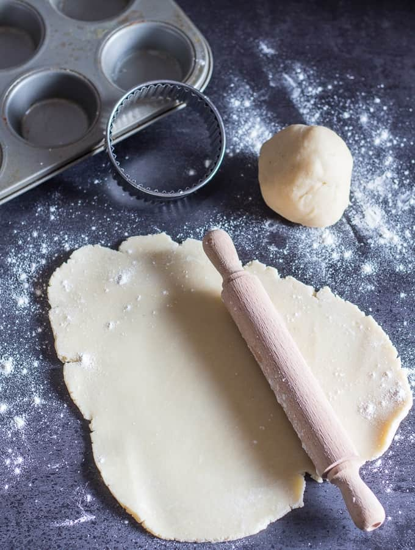

Pie Dough Recipe

Easy to make, easy to eat!
At first glance, pie dough might seem like something hard to make for kitchen novices. But in reality, it's not all that difficult!
With only a few ingredients, and depending on what you use it for, this all-in-one pie dough recipe is sure to satisfy all those at the dinner table.
Ingredients:
- 2 1/4 Cup flour
- 1/2 Teaspoon salt
- 2 Tablespoon sugar (omit for savory dishes)
- 1 Cup unsalted butter, cubed
- 1/2 Cup ice water
Steps:
- Pulse flour, salt, and sugar in a food processor.
- Add butter and pulse until it's pea sized in shape.
- Transfer mixture into a bowl.
- Add 1/2 cup of ice water.
- Mix and knead until well combined.
- Separate the dough into two even halves.
- Wrap in saran wrap and store it in the fridge for at least an hour.
- Use however you like!